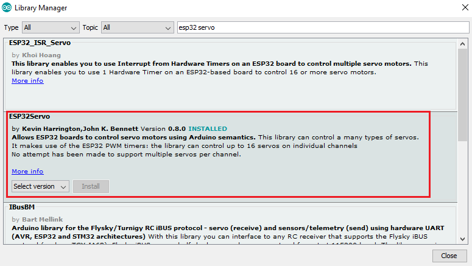

Topic 10: Machine Building
For this week assignment I decided to control a mechanical hand from remote using Firebase.
I have used the mechanical arm I had 3D printed for my final project.
I have found the mechanical arm I needed online (here is the link) and I have modified it as I needed.
Firstly I connected the gripper to my Huzzah board:

Then I modified the SimpleWiFiServer arduino example to make it drive my servo motor to open and close the gripper. The Servo library doesn't work with the Huzzah board so I had to install another library:
This is my program to use the a servo motor to open or close the gripper:
#include < WiFi.h> // esp32 library
#include < FirebaseESP32.h> // firebase library
#include < ESP32Servo.h>
#define GR_Lower_Limit 60
#define GR_Upper_Limit 125
Servo myservo; // create servo object to control a servo
int pos = 0; // variable to store the servo position
int current_status = 0;
#define FIREBASE_HOST "..." // the project name address from firebase id
#define FIREBASE_AUTH "..." // the secret key generated from firebase
#define WIFI_SSID "..." // input your home or public wifi name
#define WIFI_PASSWORD "..." // password of wifi ssid
String fireString = ""; // Gripper status received from firebase
//Define FirebaseESP32 data object
FirebaseData firebaseData;
void setup() {
myservo.attach(21);
Serial.begin(115200);
delay(1000);
WiFi.begin(WIFI_SSID, WIFI_PASSWORD); // try to connect with wifi
Serial.print("Connecting to ");
Serial.print(WIFI_SSID);
while (WiFi.status() != WL_CONNECTED) {
Serial.print(".");
delay(500);
}
Serial.println();
Serial.print("Connected to ");
Serial.println(WIFI_SSID);
Serial.print("IP Address is : ");
Serial.println(WiFi.localIP()); // print local IP address
Firebase.begin(FIREBASE_HOST, FIREBASE_AUTH); // connect to firebase
Firebase.reconnectWiFi(true);
Firebase.set(firebaseData, "/Gripper_STATUS", "Open"); // set initial string of "Open"
}
void loop() {
Firebase.get(firebaseData, "/Gripper_STATUS"); // get gripper status input from firebase
fireString = firebaseData.stringData(); // change to e.g. intData() or boolData()
Serial.println(fireString);
if ((fireString == "Closed" and current_status == 0)) { // compare the input of gripper status received from firebase
current_status = 1;
Serial.println("Gripper Closed");
for (pos = GR_Upper_Limit; pos >= GR_Lower_Limit; pos -= 1) { // goes from 0 degrees to 40 degrees
// in steps of 1 degree
myservo.write(pos); // tell servo to go to position in variable 'pos'
delay(15);
}
}
else if ((fireString == "Open") and current_status == 1) {
// compare the input of led status received from firebase
current_status = 0;
Serial.println("Gripper Open");
for (pos = GR_Lower_Limit; pos <= GR_Upper_Limit; pos += 1) { // goes from 0 degrees to 40 degrees
// in steps of 1 degree
myservo.write(pos); // tell servo to go to position in variable 'pos'
delay(15);
}
}
else {
if ((fireString != "Open") and (fireString != "Closed"))
Serial.println("Please send Open/Closed");
}
delay(1000);
}
After this I created my Firebase to control the gripper from a remote server.
Here you can find the web page to control the gripper